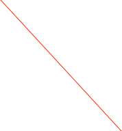
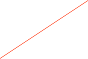

CAEN V895


Set the VME Address
The CAEN Mod. V895 is a 16 CHANNEL LEADING EDGE DISCRIMINATOR housed in a single width VME module. The module accepts 16 negative inputs (positive on request) and produces 16 differential ECL outputs with a fan-out of two on two front panel header connectors (a functional block diagram is shown in Fig. 1.2).
The pulse forming stage of the discriminator produces an output pulse whose width is adjustable in a range from 5 ns to 40 ns via VME. Each channel can work both in Updating and Non-Updating mode according to on-board jumpers position.
The discriminator thresholds are individually settable in a range from -1 mV to -255 mV (1 mV step), via VME through an 8-bit DAC. The front panel houses also VETO and TEST inputs.
A Current Sum output generates a current proportional to the input multiplicity, i. e. to the number of channels over threshold, at a rate of -1.0 mA per hit ±20 %.
A "MAJORITY" output provides a NIM signal if the number of input channels over threshold exceeds the MAJORITY programmed value.
Several V895 boards can be connected in a daisy chain via the Current Sum output: in this case, by switching the majority logic to “External”, it’s possible to obtain a Majority signal when the number of active channels in the chained modules exceeds a global Majority level.
An "OR" output on a front panel connector provides a global OR of the output channels. The relevant "OR" LED lights up if at least one of the unmasked channels is over threshold. The module's operations are completely controlled via software for each channel through the VME bus. The most important are:
-
•Setting of the discriminator thresholds (8 bit data) from -1 to -255 mV.
-
•Setting pattern of inhibit; each channel can be turned "ON" or "OFF" by using a mask register.
-
•Setting output width in a range from 5 to 40 ns.
-
•Setting of the Majority threshold value.
-
•Common TEST.
The dialog has a page for basic operations and one for settings.
Please refer to the manual for more details.
Load the current set of thresholds into hardware


The write value and the channel to use
Operation to do on the selected register using the current set of values
Extra Info about the selected register
The card’s register list. the current operation will be applied to he selected register. See the documentation that came with the card for more information on each register